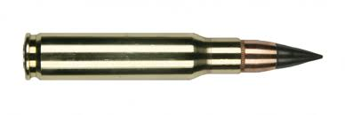

Револьвер
Револьве́р (англ. revolver — від to revolve — «обертатися») — індивідуальна багатозарядна нарізна короткоствольна стрілецька зброя з обертовим барабаном для стрільби на дистанцію до 100 м.
Револьвер з'явився в XVI ст. Широкого розповсюдження набув тільки з 30-х років XIX ст., після створення вдалої капсульної конструкції, продукованої Кольтом в США. Першим ефективним револьвером став створений 1836 року Colt Paterson. Популярність здобув Colt Single Action Army («Миротворець»), що перебував на озброєнні у 1872-92 роках, а в цивільних варіантах випускається і донині. У Російській імперії з кінця 19 століття і в СРСР в 20-40-х рр. перебував на озброєнні револьвер системи Нагана. У першу половину XX століття, як зброя армії поступово витіснений самозарядним пістолетом. Водночас продовжує широко використовуватись як зброя самозахисту та зберігається на озброєнні поліції у деяких країнах.
| Виробник | час | Калібр |
| Colt Paterson | XVI ст | 7,62 — 11,43 мм |
 Куля калібра 7.62
Куля калібра 7.62